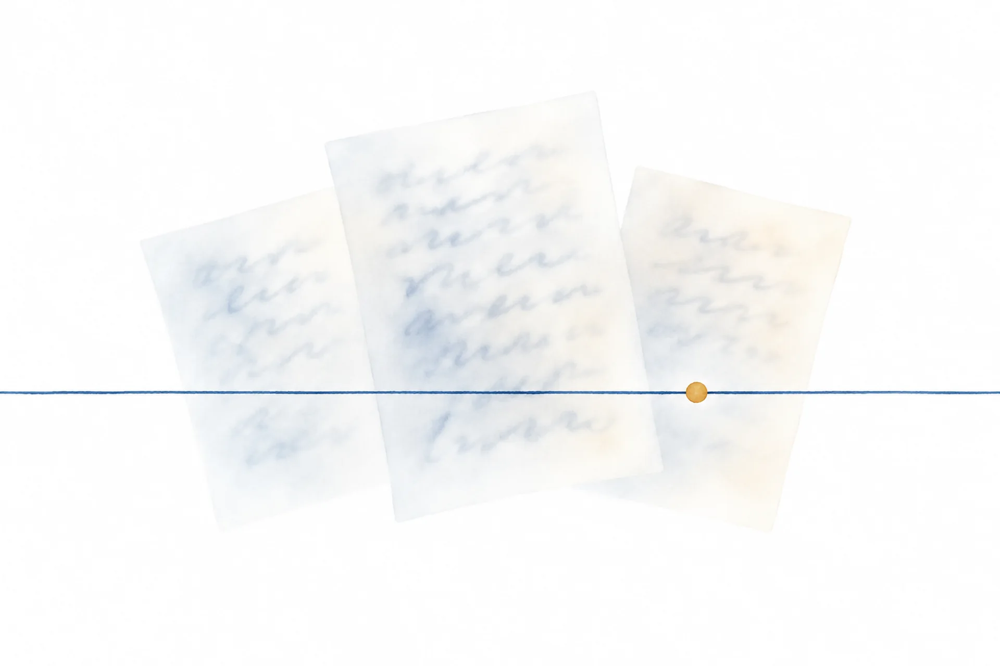

מבט כפול
ניתוח איכותני דיאלקטי בתשעה שלבים, שכל אחד מהם מבוצע בידי סוכן בינה מלאכותית. שלושה מהסוכנים עובדים בכוונה בלי לראות את הראיונות.
או לנתח ראיונות משלכם, על המחשב שלכם
לפי השיטה של פרופ' גיא אנוש וטל אליוסף, אוניברסיטת חיפה. אב-טיפוס להדגמה; הראיונות בהדגמה בדויים.
תשעה שלבים, ושלושה רגעים של עיוורון מכוון
רוב שיטות הניתוח האיכותני מבקשות מהחוקרת לשים לב למה שסותר את הפרשנות שלה. אבל סתירה שלא עולה על הדעת פשוט לא נראית. הניתוח הדיאלקטי-קונסטרוקטיביסטי בתשעה שלבים של פרופ' גיא אנוש וטל אליוסף הופך את הסדר: בונים את הניגוד מראש, מדמיינים במכוון את החלופה התאורטית לכל תווית, ורק אחר כך בודקים אם היא קיימת בנתונים.
ניגוד שנמצא בנתונים הופך לציר: רצף בין שני קצוות, שעליו אפשר למקם את עמדות המרואיינים ואת נקודות הביניים שלהן. התוצר הוא מפה של צירים והקשרים ביניהם, לא רשימת תמות.

למה הסוכן לא רואה?
לפי המאמר, מי שקרא את הראיונות מקרוב נושא את התוכן שלהם לכל צעד הבא, ומהלך שאמור להיות תאורטי הופך לתיאור של מה שזוכרים מהנתונים. לכן בשלבים 3, 5 ו-8 הסוכן עובד בלי לראות אותם (סעיף 5.1).
בשלב 3 בונים ניגודים מתוך התוויות בלבד. בשלב 5 בונים צירים מתוך הזוגות ששרדו, בלי הציטוטים שאישרו אותם. בשלב 8 ממפים קשרים מתוך שמות הצירים וההגדרות שלהם. הנתונים חוזרים בשלב שאחרי, ושם הבנייה נבחנת מולם.
חוקרת אנושית עושה את זה בתיקיות נפרדות או בימים נפרדים. כאן זה נאכף בקוד: הסוכן העיוור פשוט לא מקבל את הראיונות, ובדיקה אוטומטית מוודאת אחרי כל הרצה שאף רצף של שש מילים מהם לא הגיע אליו.
מי רואה מה
כל שורה היא סוכן, וכל עמודה היא סוג של חומר. נקודה מלאה: הסוכן מקבל את החומר הזה.
שלושה עקרונות מחזיקים את תשעת השלבים
-
ניתוק קוגניטיבי מכוון
בשלבים 3, 5 ו-8 עובדים מקלט מופשט, תוויות, זוגות ושמות, בלי גישה לנתונים.
-
מעגלי עיגון
כל בנייה תאורטית חוזרת לנתונים: שלב 4 בוחן את 3, שלב 6 בוחן את 5, שלב 9 בוחן את 7 ו-8.
-
נקודות עצירה רפלקטיביות
שתיים, וחובה: אחרי שלב 4 בוחנים מה שרד ומה נפל, ובתוך שלב 7 בוחרים את אוצר המילים התאורטי.
הראיונות
שאלת המחקר
ההרצה
תשעה סוכנים עובדים בזה אחר זה, וכל אחד רואה רק את מה שהשלב שלו מתיר. אפשר לצפות בהרצה מתחילתה, לעצור ולקפוץ לכל שלב. בשתי נקודות העצירה ההרצה ממתינה לחוקרת.
אפשרויות
נקודת עצירה א, אחרי שלב 4
מה שרד את המבחן, ומה זה אומר על ההנחות שלנו?
הסוכן בשלב 4 חזר לראיונות וחיפש עדות לכל ניגוד שנבנה בעיוורון. עכשיו ההרצה עוצרת. לפי המאמר, דפוס ההישרדות הוא חלון להנחות של המנתח: ניגודים שנפלו נפלו לא פעם משום שלא דמיינו את החלופה ברצינות, כלומר היו עמדות קש. זה גם הרגע להניח בצד זוגות ששרדו אבל הם בעצם היפוך לוגי.
שני סימני אזהרה מהמאמר: אם כמעט כל הניגודים שורדים, כנראה שהניתוק בשלב 3 לא נשמר. ואם כמעט כל הניגודים נפלו, ייתכן שבחומר אין את העומק הדיאלקטי שהשיטה מניחה (סעיף 8).
נקודת עצירה ב, בתוך שלב 7
איזה שם מתאים לציר כולו?
זה המהלך הטעון ביותר בתאוריה בכל השיטה. השם אינו תיאור של שני הקצוות אלא של הממד שביניהם, והוא צריך להתאים גם לנקודות האמצע. שם שמתאים רק לקצוות זיהה את הציר לא נכון.
בחרו שם לכל ציר מבין שלוש ההצעות של הסוכן, או כתבו שם משלכם. השם שתבחרו מופיע מיד בכל מקום בהמשך: במפת הקשרים, בממצאים ובטקסט המסכם.
הממצאים
הממצא אינו הצירים עצמם, אלא מה שהצירים, יחד, מאפשרים לומר על שאלת המחקר. למטה: מפת הצירים עם נקודות האמצע שנמצאו בנתונים, הקשרים ביניהם, והטקסט המסכם של שלב 9. כל ציטוט פותח את הראיון במקום שבו הוא נאמר.
אחרי הצפייה
אותן שאלות, ועוד שתיים. גם כאן הכול נשאר בדפדפן שלכם בלבד.
החומרים שלכם
אותם תשעה סוכנים ואותן שתי עצירות, על ראיונות שלכם. הטקסטים עוברים רק דרך שרת שרץ על המחשב שלכם, אל ספק המודל שמופיע על המסך, ונשמרים רק אצלכם עד שתמחקו אותם.
מאחורי הקלעים
המאמר רואה בשרשרת הקלטים והפלטים את מסלול הביקורת של השיטה: אפשר לזהות בדיוק איפה נכנסה כל פרשנות. כאן המכונה מתעדת אותו. כל קריאה למודל נרשמת עם המודל, טביעת האצבע של ההנחיה שקיבל, האם ראה נתונים, משך הזמן ומספר הניסיונות. אחרי ההרצה שלוש בדיקות אוטומטיות בודקות אותה מחדש.
תיעוד כל קריאה למודל
בדיקות אוטומטיות
ההנחיות שהסוכנים קיבלו: שמות וטביעות אצבע
ההנחיה לכל קריאה מורכבת משלוש שכבות לפי הסדר: שכבה כללית שאף שלב אינו יכול להסיר, שכבת השלב, ושכבת המחקר. ההנחיות מוחזקות בשרת, והדפדפן אינו יכול לשנות אותן. כאן מופיעים שם כל שכבה וטביעת האצבע שלה. הטקסט המלא של כל הנחיה נמצא בחוברת, שנפתחת בקוד גישה, ולידו אותה טביעת אצבע: כך אפשר לוודא שכל סוכן קיבל בדיוק את ההנחיה שבחוברת.